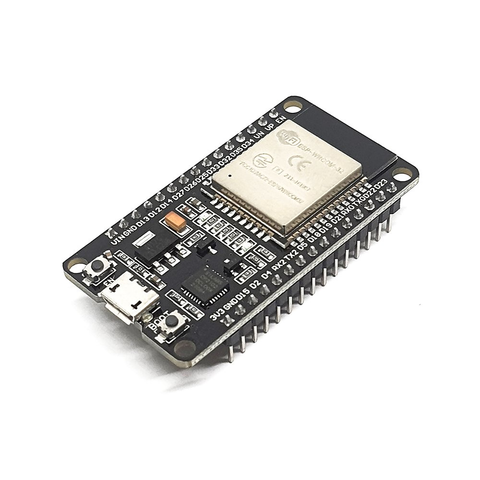
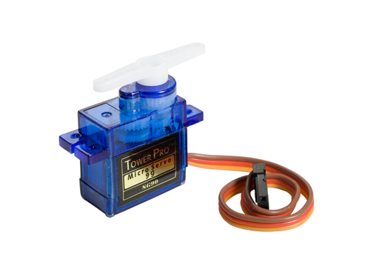
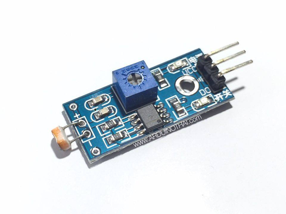
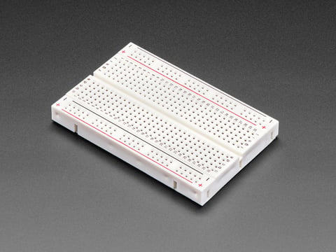
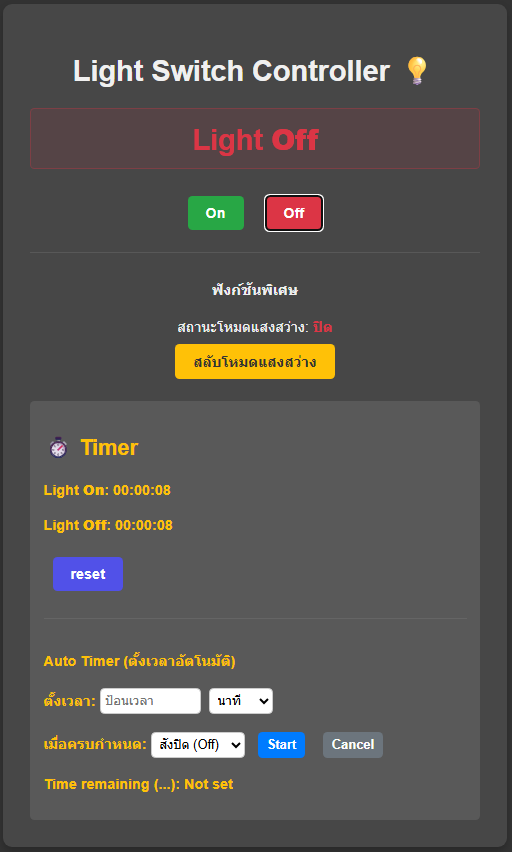
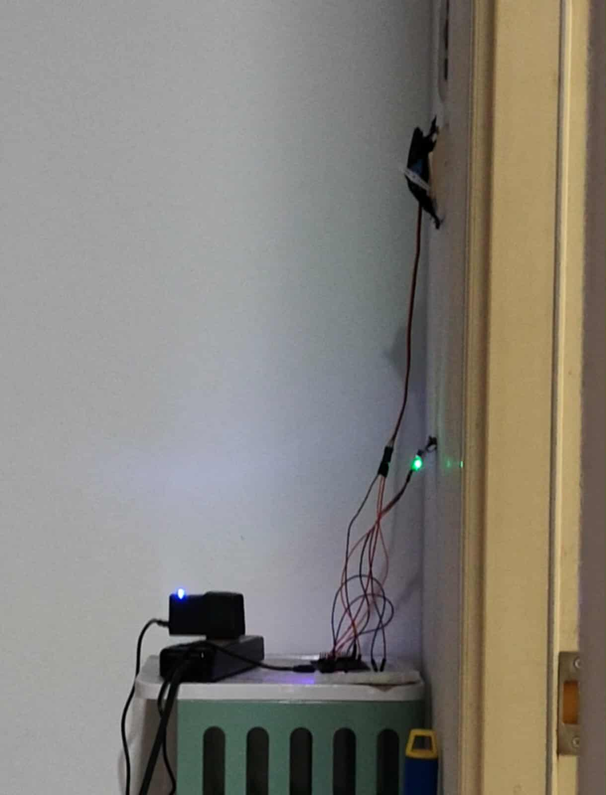

🎯 วัตถุประสงค์ (Objective)
โครงการนี้มีวัตถุประสงค์เพื่อสร้างอุปกรณ์สำหรับเปิด-ปิดสวิตช์ไฟอัตโนมัติ เพื่อช่วยลดการสัมผัสสวิตช์โดยตรง และเพิ่มความรวดเร็ว สะดวกสบายในการใช้งาน
⚙️ หลักการทำงาน (How it Works)
ระบบนี้ใช้ไมโครคอนโทรลเลอร์ ESP32 สองตัวทำงานประสานกันผ่าน Wi-Fi และ Bluetooth:
- ESP32 (Host): ทำหน้าที่เป็นเซิร์ฟเวอร์หลัก สร้างหน้าเว็บไซต์ (Web Server) สำหรับให้ผู้ใช้เข้ามาควบคุมผ่านมือถือหรือคอมพิวเตอร์ (WiFi) (Bluetooth)
- ESP32 (Slave): ทำหน้าที่เป็นไคลเอนต์ รับคำสั่งจาก Host จากนั้นจะสั่งการ Servo Motor ให้หมุนเพื่อกดสวิตช์ไฟจริง (Bluetooth)
🛠️ อุปกรณ์ที่ใช้ (Hardware)

ESP32

Servo Motor (SG90)

Light Sensor Module

Breadboard
🖥️ หน้าจอควบคุม (Web Interface)
หน้าเว็บสำหรับควบคุม ถูกออกแบบมาให้ใช้งานง่าย (Minimal) มีฟังก์ชันครบถ้วนทั้งการเปิด-ปิด, โหมดอัตโนมัติ (ใช้เซ็นเซอร์แสง) และการตั้งเวลา
สถานะ: เปิด (Light On)

สถานะ: ปิด (Light Off)
🏠 ภาพการติดตั้งใช้งานจริง (Final Installation)
ภาพการติดตั้ง ESP32 (Slave) และ Servo Motor เข้ากับสวิตช์ไฟจริงภายในห้อง

▶️ วิดีโอสาธิตการทำงาน (Demonstration Video)
รับชมการทำงานจริงของระบบ Light Automation ได้จากวิดีโอนี้: